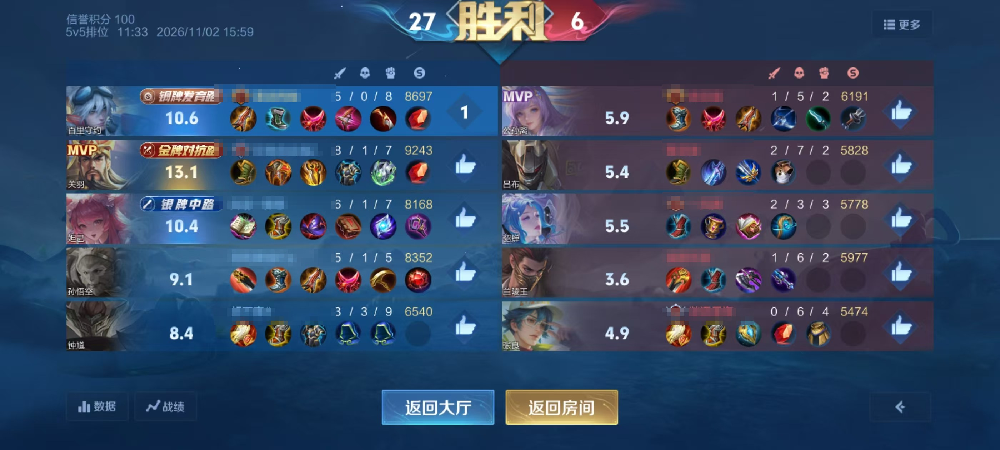
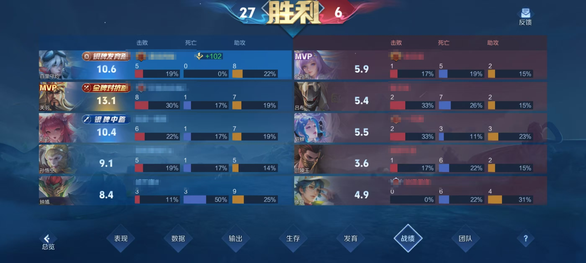
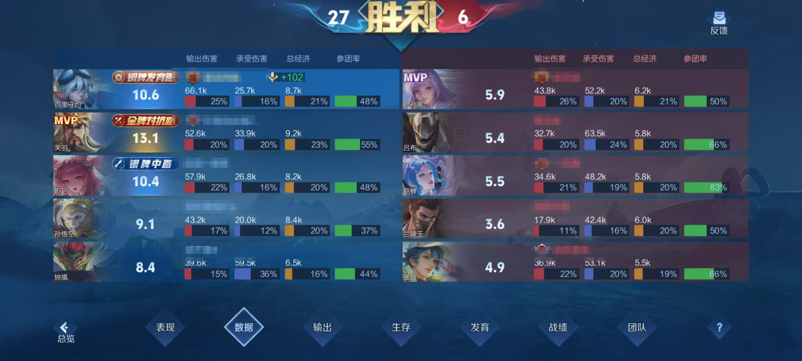
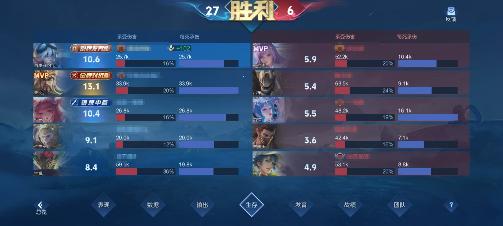
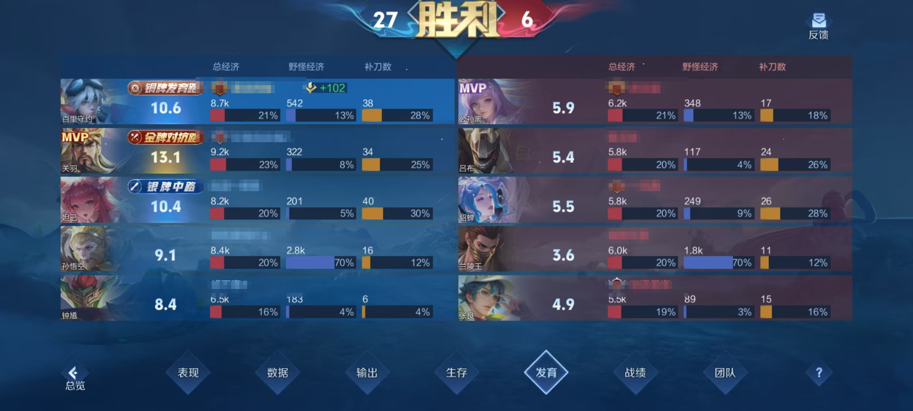
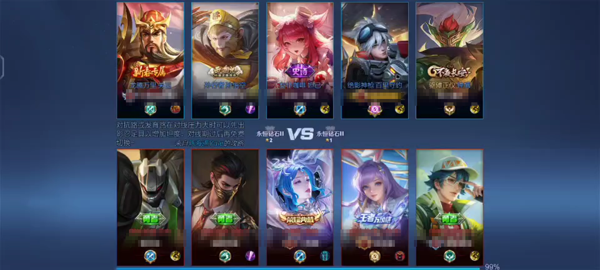
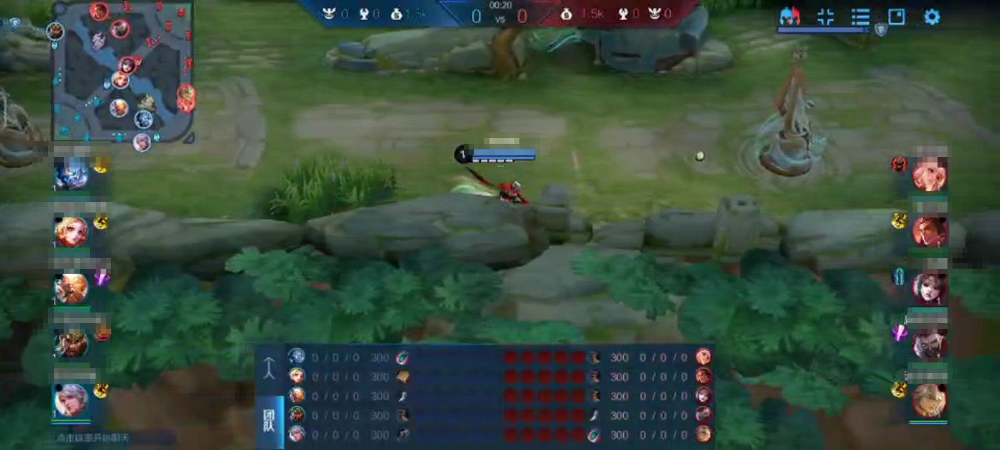

王者营地只保留最近约一个月的对局详情。一个月内的局直接走「营地同步」；更早的老局没有通道可挂，要用七张赛后截图或一段录屏新录入一局。已有对局只是缺素材，用「补采」。
截图 / 录屏两种素材，对应两种完全不同的动作。
| 用途 | 什么时候用 | 在工作台怎么点 |
|---|---|---|
| 补采 | 对局通道已经存在（通常是营地同步建的），只是缺截图 / 录屏素材。 | 截图 OCR / 录屏 OCR 页 → 选一个已有对局 →「补到这一局」。 |
| 新录入一局 | 超过一个月、营地没有详情，或者根本没走营地采集的老局——没有通道可挂。 | 截图 OCR / 录屏 OCR 页 → 识别结果卡片 →「新建一局并录入」→ 填日期 / 训练组 → 进校对页核对保存。 |
新录入不要求营地链接：七页截图齐全，或一段十人阵容完整的录屏报告，任一即可建档、审核、保存。两样都有时数据最完整（截图给终局面板，录屏给过程时间轴）。
不是软件坏了，是营地只保留最近一个月的对局详情。
-30457 暂不支持查看一个月前的战绩详情；换成手机营地 App 打开同一局，同样看不到十人面板。
也就是说，这条数据在营地侧已经没有了，工作台再怎么拉也拉不到。
所以采集分两条路，按这局在哪边选：
关键习惯：赛后截图和录屏要当天存。超过一个月再想补，营地已经没有入口，没存就补不回来了。
在赛后结算页把七个页签各截一张；「战绩」页有两种显示方式，合计七张，缺一不可。





上图为教学示例：真实数值保留，昵称已打码；你自己上传的截图不要打码——识别要靠昵称和数值。
| 项 | 要求 |
|---|---|
| 同一局 | 七张必须来自同一局，不能拿不同局的图凑；七张的日期、比分、十人阵容要一致。 |
| 要保留 | 顶部比分与日期、双方十人、列名、底部页签。 |
| 不要做 | 不裁切、不拼图、不遮挡字段、不加边框/文字、不压缩到看不清数字。 |
| 命名（可选） | 01-战绩装备.png 一直到 07-团队.png，方便系统自动分组。 |
| 格式 | PNG / JPEG / WebP 原图；不要用聊天软件压缩过的「模糊图」。 |
| 传到电脑 | 推荐：数据线拷贝，或 QQ 选「发送文件」（文件方式不压缩）。 用微信发图必须勾「原图」再发送——不勾原图微信会按画质约 70-80 重压缩，小字直接发糊。 系统识别到压缩图时会在审查警告里提示重传。 |
每局一段完整录屏，从加载页到赛后结算，不剪辑、不加速。


| 项 | 要求 |
|---|---|
| 画质 | 横屏 1080p、30 fps 起；16:9 或 20:9 均可。 |
| 时长 | 覆盖整局，从加载页到结算页，中途不剪切。 |
| 格式 | mp4 / mov / mkv / webm，单文件不超过 2 GB。 |
先上传识别，再决定这局是「补采」还是「新录入」。
审核按录入方式区分：营地通道看营地链接 + 营地面板（或七图 + 录屏）；OCR 新录入通道看七页截图或一段十人阵容完整的录屏，二者有一组就够。缺哪一组，页面会直接列出来。
| 营地里还能看到这局，为什么工作台拉不到？ | 能看到「战绩列表」不等于能看到「对局详情」。营地对超过一个月的局只保留列表，点进去没有十人面板，接口也返回 -30457。 |
|---|---|
| 找选手重新分享一个链接行不行？ | 不行。拿到的还是同一局，营地侧没有详情，换谁分享都一样。 |
| 当时没截图，现在还能补吗？ | 补不了。赛后结算页只在打完那局后的一段时间内能看到；超过一个月，营地和工作台都没有入口。 |
| 能不能只传七张截图、不传录屏？ | 新录入一局可以：七页截图或一段十人阵容完整的录屏，任一即可建档审核。两样都有时数据更完整——截图给终局面板，录屏补过程时间轴。营地通道的兜底审核仍按营地页面列出的材料要求走。 |
| 训练赛（开房间）也能用吗？ | 可以，七张截图和录屏与模式无关；营地同步对开房间的覆盖要看营地是否提供该局详情。 |
| 截图要不要打码？ | 不用。教学示例里的马赛克只是为了让示例更干净；你上传的原图请保留昵称和数值，否则识别要多花人工。 |